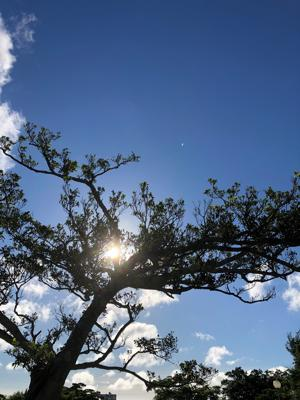
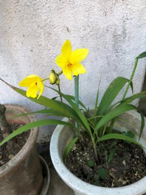

うるがいの話 ある日
最新: 生活保護【うるがいの話 ある日】とは 一日だけのプログです
『うるがいの話』の最新一日だけのプログで、通信料が少なく経済的だ。カニの画像をクリックすると全ての日付が載る『うるがいの話』サイトを表示します
|
|
【うるがいの話】 うるがい(ｳﾙｶﾞｲ urugai)とは、『もずくがに』の名前でとても大きくなります。 |
|---|---|
|
|
【カミマヤーの話】 猫のことを方言でマヤーといいます。カミマヤー（kamimayaa）とは、神の猫のことです。 |
|
【たながぁの音楽】 たながぁ（ﾀﾅｶﾞｰ tanagaa）とは手長えびのことで、何種類かあり大きいのは車 エビぐらいになります。 |

|
【ぶながぁの話】 ぶながぁ(ﾌﾞﾅｶﾞｰ bunagaa)とは、赤い髪の毛、赤い身体、そして身長は１ｍ２０ｃｍ ぐらい、川の蟹を食べているの目撃された。場所は沖縄県国頭郡大宜味村のと ある村僕の隣近所に住んでいる爺さんから、聞いた話です。 |
|
|
【ギーマの話】 ギーマ(giima)とは、山原の里山に咲くスズランに似た、 花を付けます。実は食べられます、 気が付くと口の周りが紫になっています。 |
2022年06月25日 (土）生活保護
16:12
 
リリー・フランキー著『東京タワーオカンとボクと、時々、オトン』第３３印
発行 寄贈２００７．０３．０１より
クラスの中でも生活保護を給付されている家庭の子供が増え、もう少し先生も
気を遣えばいいものを、他の生徒たちの前でその子供たちを並ばせて、ノート
や鉛筆を支給していた。ボクはその行為の意味がわからず、家に帰ってオカン
に自分はどうしてノートが貰えないのかと尋ねると、この町の話や仕事が失く
なってしまった人たちの話を聞かせてくれた。
小学生の頃、同級生のイトコの家に行くとノートや鉛筆を貰ったと私に自慢し
ていた。その時羨ましかった、なぜイトコがノートを貰えたかが分かったのが、
私の場合は、最近である。村役場に勤めていた叔父さんが、仕事を辞め収入が
無くなり生活保護を受けたためと。知り合いに生活保護を一旦やめたが、体を
壊してまた生活保護を受けている。それだけの収入では難しいらしく、身内が
少し援助している、生きていれば何とかなる。本屋大賞を貰った作品をネット
から調べ図書館から借りだした３冊目の本（本屋大賞２００６）である。リリ
ー・フランキーさんは俳優かなと思っていたが、多種多様な人と知る。世代が
近いことと、とんどもない親父がいた私はいちいち納得するのである。私の母
親が北部病院で臨終するときは、意識は全くなかったが、死ぬ直前大きく深呼
吸して亡くなった。
１６時０６分 ビットコインの総資産 ￥８、３５３↑